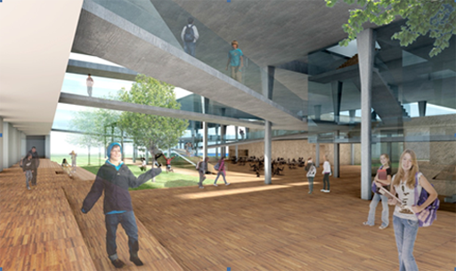
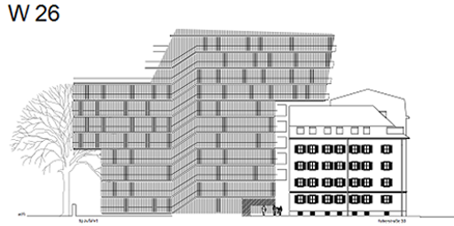

-
Wohnen an der Neufanggasse 
Planung, Einreichung und Leitdetails
Auftraggeber: Salzburg Wohnbau -
Klima:aktiv Aribonenstraße 
Mit Johannes Schallhammer Architektenwettbewerb: Ankauf
-
Alterszentrum Gremm 
EU offener Architektenwettbewerb
-
Gymnasium Krems BG/BRG EU offener Architektenwettbewerb
-
Moskau Chambre Theatre Art Centre 
Mit Dirk Lüderwaldt und Marc Mer
-
Architekturpreis Land Salzburg 2012 
Wir freuen uns sehr über einen Anerkennungspreis für die Lokalbahnstation Lamprechtshausen!
-
Wohnbebauung Humboldtstraße Gutachterverfahren: 3. Preis